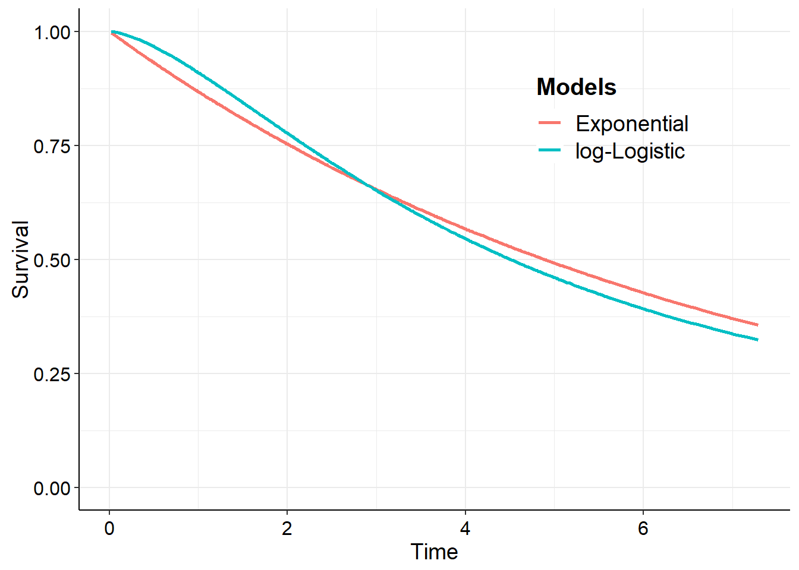

Estimated average survival time distribution*
mean sd 2.5% median 97.5%
4.521216 0.1115196 4.292983 4.523981 4.72487
*Computed over the range: [0.02192-7.28493] using 1000 simulations.
NB: Check that the survival curves tend to 0 over this range!
We can compare these parametric estimate with the median survival time from the Kaplan-Meier.
min(mle$misc$km$time[mle$misc$km$surv <0.5])
[1] 4.950685
If we denote the median with \(t_{50}\) then to get the medians ourselves we can take the coefficient value from the fit.model output and use the fact that
Note that the parameter returned from fit.model is the log of the rate. Alternatively, and more general, we can simulate (multiple) survival curves from the coefficient posterior and estimate the median for each of these.
So, sample from the posterior using make.surv() from the survHE package to get for the single curve case as follows
xx <-make.surv(mle)min(xx$S[[1]]$t[xx$S[[1]]$S <0.5])
[1] 4.893151
It follows that we can do something similar for multiple simulations to obtain uncertainty bounds.
xx <-make.surv(mle, nsim =100)# direct estimatesrtimes <--log(0.5)/unlist(xx$sim)# simulated estimatest_S <-min(xx$S[[1]]$t[xx$S[[1]]$S <0.5])t_low <-min(xx$S[[1]]$t[xx$S[[1]]$low <0.5])t_upp <-min(xx$S[[1]]$t[xx$S[[1]]$upp <0.5])
Warning in min(xx$S[[1]]$t[xx$S[[1]]$S < .x]): no non-missing arguments to min;
returning Inf
Warning in min(xx$S[[1]]$t[xx$S[[1]]$S < .x]): no non-missing arguments to min;
returning Inf
plot(mle) +geom_vline(xintercept = prctile_times) +annotate("text", x = prctile_times +0.5, y =0.25, label = prctile)

Compare with Kaplan-Meier
Multiple groups
# Fits the same model using the 3 inference methodsmle <-fit.models(formula =Surv(recyrs,censrec) ~ group,data = bc,distr ="exp",method ="mle")mle
Model fit for the Exponential model, obtained using Flexsurvreg
(Maximum Likelihood Estimate). Running time: 0.020 seconds
mean se L95% U95%
rate 0.0603838 0.00845542 0.0458911 0.0794534
groupMedium 0.8180219 0.17122084 0.4824352 1.1536086
groupPoor 1.5375232 0.16280169 1.2184378 1.8566087
Model fitting summaries
Akaike Information Criterion (AIC)....: 1668.212
Bayesian Information Criterion (BIC)..: 1681.805
xx <-make.surv(mle)purrr::map_dbl(xx$S, ~min(.x$t[.x$S <0.5]))
Warning in min(.x$t[.x$S < 0.5]): no non-missing arguments to min; returning Inf